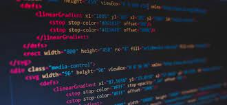

science de l'informatique
L'informatique est l'étude des moyens de traitement automatique de l'information, au sens large. L'un des principaux buts de
l'informatique est la conception et la réalisation de systèmes opérationnels
(ordinateurs, logiciels, programmes d'application). L'informatique est une science jeune. En cinquante ans d'existence,
elle est devenue une véritable discipline scientifique, possédant un développement et une recherche propres,
en même temps qu'un instrument indispensable à la compréhension et à la maîtrise des phénomènes complexes dans de multiples disciplines.
Source: https://www.orientation.ch/dyn/show/4009?id=32326